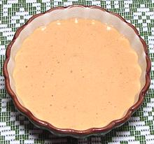

 |
Russian DressingNorth American | ||||
| Makes: Effort: Sched: DoAhead: |
1-1/2 cup ** 15 min See Notes |
What is Russian Dressing? Seems nobody knows, but the most common definition is mayonnaise with ketchup. | |||
|
-----
1 2 1 1/2 2 2 1 1/8 ----- 1/4 3/4 |
---
cl oz t t t T t --- c c |
-- Paste items
Egg Yolk (1) Garlic (very fresh) Onion Salt Dijon Mustard Tomato Paste Chili sauce (2) Pepper --------- Red Wine Vinegar Olive Oil (3) |
Recipe #1 is made fresh and is pretty tasty. It should be kept refrigerated and used in less than a week. Important: see Egg Safety, and if in doubt, use Recipe #2 with commercial mayonnaise
|
|
-----
2 1 2 2 1 ----- 1 3/4 |
---
cl oz t t T --- T c |
-- Paste Items
Garlic (very fresh) Onion Dijon Mustard Tomato Paste Chili sauce ---------- Red Wine Vinegar Mayonnaise (5) |
|